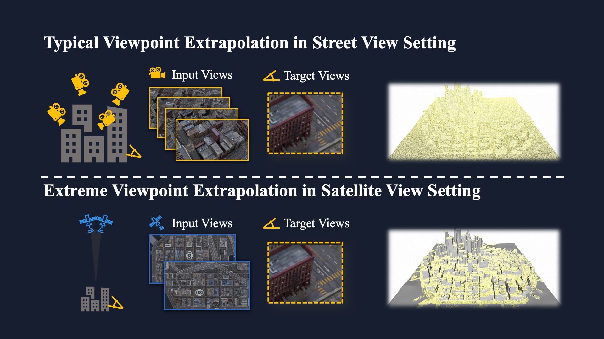

City-scale 3D reconstruction from satellite imagery presents the challenge of extreme viewpoint extrapolation, where our goal is to synthesize ground-level novel views from sparse orbital images with minimal parallax. This requires inferring nearly 90° viewpoint gaps from image sources with severely foreshortened facades and flawed textures, causing state-of-the-art reconstruction engines such as NeRF and 3DGS to fail.
To address this problem, we propose two design choices tailored for city structures and satellite inputs. First, we model city geometry as a 2.5D height map, implemented as a Z-monotonic signed distance field (SDF) that matches urban building layouts from top-down viewpoints. This stabilizes geometry optimization under sparse, off-nadir satellite views and yields a watertight mesh with crisp roofs and clean, vertically extruded facades. Second, we paint the mesh appearance from satellite images via differentiable rendering techniques. While the satellite inputs may contain long-range, blurry captures, we further train a generative texture restoration network to enhance the appearance, recovering high-frequency, plausible texture details from degraded inputs.
Our method's scalability and robustness are demonstrated through extensive experiments on large-scale urban reconstruction. For example, in our teaser figure, we reconstruct a 4km2 real-world region from only a few satellite images, achieving state-of-the-art performance in synthesizing photorealistic ground views. The resulting models are not only visually compelling but also serve as high-fidelity, application-ready assets for downstream tasks like urban planning and simulation.

Unlike street views, satellite images are sparse and off-nadir, lacking parallax for vertical structures. As shown, MVS (yellow points) only recovers ground and roofs, failing on facades.
To address this, we model the city as a 2.5D height map. This representation enforces geometric regularity, enabling the reconstruction of complete, watertight vertical facades.
Our method achieves superior performance in reconstruction quality. Please move the slider to see the difference between our results and baselines.
@article{yu2025orbit2ground,
author = {Fei Yu and Yu Liu and Luyang Tang and Mingchao Sun and Zengye Ge and Rui Bu and
Yuchao Jin and Haisen Zhao and He Sun and Yangyan Li and Mu Xu and
Wenzheng Chen and Baoquan Chen},
title = {From Orbit to Ground: Generative City Photogrammetry from Extreme Off-Nadir Satellite Images},
year = {2025},
}